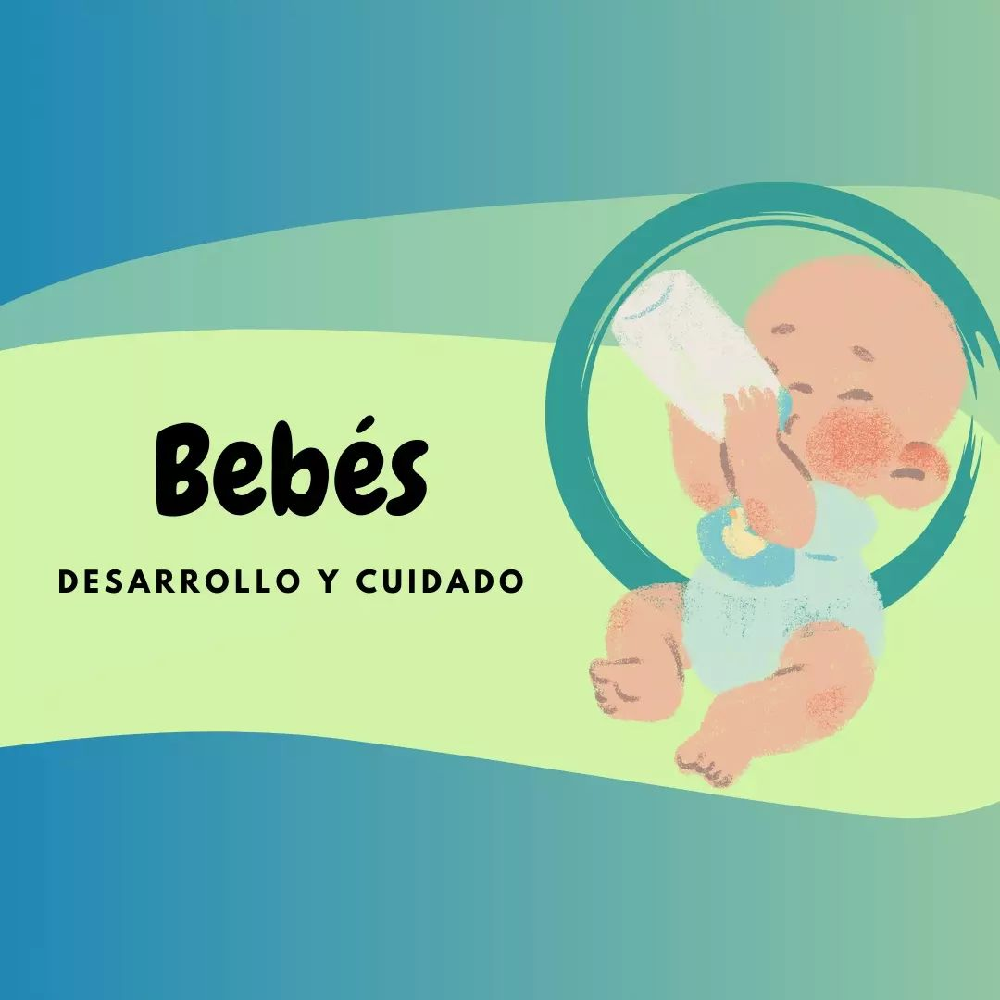
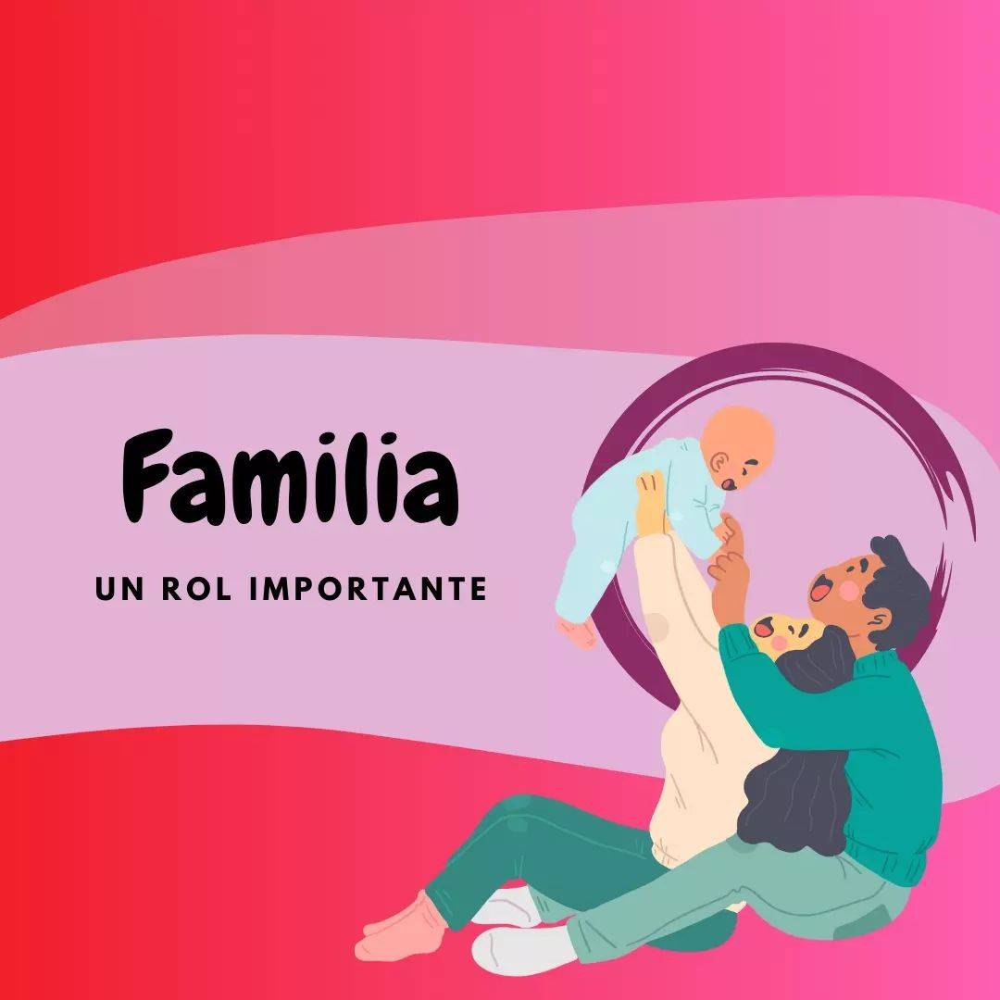

.png)
Creciendo Juntos: Síguenos en Instagram
Embarazo
La incertidumbre en el proceso de embarazo es muy normal y pueden surgir muchas dudas recurrentes!🧐
Leer Más
Bebes
Conocer la importancia de los primeros años de vida de nuestro bebé nos permite darle una mejor calidad de vida!✨
Leer Más
Familia
La presencia y acompañamiento de la familia en el proceso de embarazo y también luego de dar a luz es fundamental!👨👩👧👦
Leer MásPreguntas frecuentes
Los primeros movimientos, conocidos como "pataditas", generalmente se experimentan entre las semanas 18 y 25 del embarazo. Sin embargo, las madres primerizas a veces pueden sentirlos un poco más tarde. Este momento mágico varía para cada mujer y embarazo, ¡disfruta de cada pequeño movimiento que conecta a mamá y bebé!
La duración del parto varía, pero para las primerizas, suele tomar entre 8 y 12 horas. Las mujeres que han tenido hijos anteriormente pueden experimentar partos más cortos. Es importante recordar que cada parto es único, y el apoyo y la orientación del equipo de atención médica son fundamentales durante este emocionante proceso.
Una señal clave es la cantidad de pañales mojados y deposiciones diarias. Un bebé bien alimentado generalmente se alimenta al menos 8 veces al día y moja al menos 6 pañales. Además, el bebé muestra un aumento constante de peso en las visitas al pediatra. La lactancia exitosa a menudo implica paciencia y apoyo, ¡no dudes en buscar asesoramiento de profesionales de la lactancia!
La introducción de alimentos sólidos suele comenzar alrededor de los 6 meses, cuando el bebé muestra signos de estar listo, como sentarse con apoyo y demostrar interés en los alimentos. Comienza con alimentos simples y de fácil digestión, como purés de frutas y verduras, y consulta con el pediatra para una guía personalizada.
Fomentar una rutina de sueño efectiva implica crear hábitos predecibles antes de dormir. Esto puede incluir un baño relajante, lectura de cuentos y música tranquila. Coloca al bebé en la cuna cuando esté somnoliento pero aún despierto para fomentar la autoconciliación. La consistencia y la paciencia son esenciales mientras estableces una rutina que funcione para tu bebé y para ti.
El desarrollo cognitivo se fomenta a través del juego interactivo, el contacto visual y hablarle al bebé. Proporciona juguetes sensoriales y texturas para explorar. La lectura de cuentos y cantar también son excelentes maneras de estimular el desarrollo del lenguaje. Observa las señales de interés del bebé y adapta las actividades según su ritmo de desarrollo único.
Valeria Martínez
¿Recuerdas la primera vez que sostuviste a tu bebé? Comparte ese emotivo instante que cambió por completo tu vida. 💖👶✨